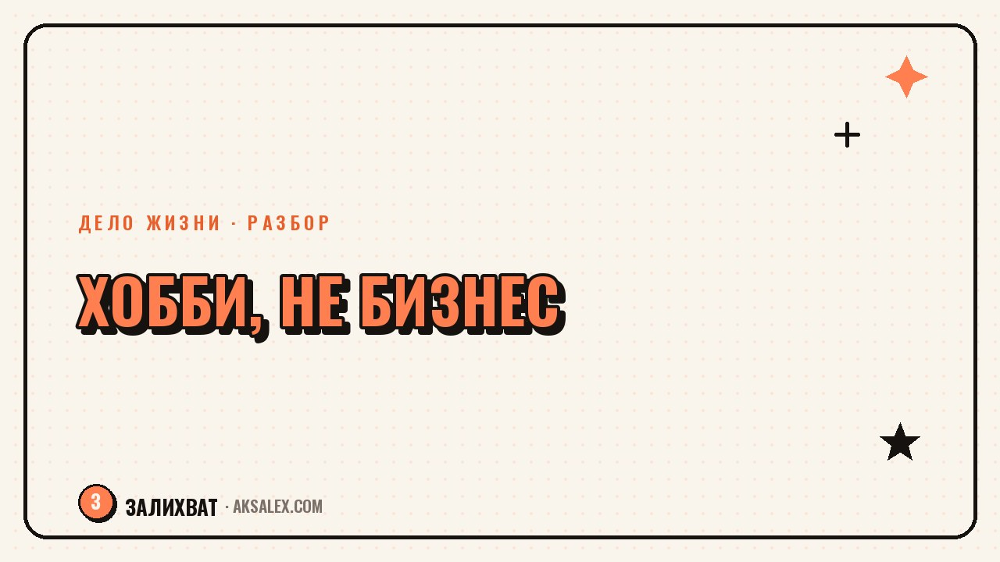

Можно ли оставить любимое дело хобби

Стоит рассказать кому-то, что ты вышиваешь или печёшь торты на выходных, как почти сразу звучит вопрос: «а почему ты на этом не зарабатываешь?». Идея, что любое дело, приносящее радость, обязано стать источником дохода, звучит отовсюду. Но это не обязанность, а выбор, и у него есть цена. Разберём, что меняется, когда хобби становится бизнесом, и как решить для себя, нужен ли тебе этот переход.
Откуда берётся давление «монетизируй своё увлечение»
Соцсети полны историй о том, как хобби превратилось в успешный бизнес, и это создаёт ощущение нормы: если дело приносит радость и получается, грех не зарабатывать на нём. Такие истории реальны, но их выносят на первый план именно потому, что они редкие, а не потому что это единственно верный путь развития увлечения.
Добавляет давления аргумент: «ты всё равно тратишь на это время, пусть оно хотя бы окупается». За ним прячется мысль, что время без финансовой отдачи потрачено зря. Это не так: отдых и радость от процесса - тоже результат, хотя его не положишь в графу доходов.
Что меняется, когда хобби становится делом
Как только у увлечения появляется заказчик или клиент, в игру входят обязательства: сроки, ожидания других людей, необходимость делать не то, что хочется, а то, что просят. Это другое занятие, не то, которым ты занималась раньше.
Вопросы, которые стоит задать себе до монетизации
- Готова ли я делать это по графику, а не когда хочется
- Как я отреагирую на первый критический отзыв на то, что раньше делала только для себя
- Останется ли во мне желание заниматься этим в свободное время, если это станет работой
- Что я буду чувствовать, если результат перестанет приносить доход через полгода
Признаки, что монетизация может разрушить радость
Есть дела, особенно чувствительные к превращению в работу. Если главная ценность занятия в том, что оно освобождает голову от рабочих задач, велик шанс, что с появлением клиентов эта функция пропадёт - оно само станет источником задач и дедлайнов.
Хобби, которое лечит от усталости, и дело, которое приносит доход, иногда не могут существовать в одном занятии одновременно - и это нормально признать.
Другой признак - тревога при мысли о критике или сравнении с другими в этой теме. Если ты уже избегаешь показывать работы кому-то, кроме близких, монетизация с публичностью и отзывами может стать источником стресса, а не облегчением.
Хобби для себя и дело для дохода: в чём разница
| Параметр | Хобби для себя | Дело с монетизацией |
|---|---|---|
| Время занятия | Когда есть настроение и силы | По графику, под заказ или дедлайн |
| Результат | Важен сам процесс | Важен результат для другого человека |
| Критика | Можно не показывать никому | Часть работы, нужно учиться принимать |
| Риск выгорания | Низкий, можно отложить в любой момент | Выше, особенно при нестабильном доходе |
Как защититься от вопроса «а почему ты не зарабатываешь на этом»
Самый надёжный способ - заранее сформулировать для себя фразу, почему дело остаётся хобби. Не для оправдания перед другими, а чтобы не теряться каждый раз, когда кто-то задаёт этот вопрос.
- «Это моё место отдыха, и я не хочу превращать его в обязанность»
- «Мне нравится делать это без оценки и сравнения с другими»
- «У меня уже есть дело, которое кормит, а это - для души»
Такой ответ не требует доказательств. Он честный и закрывает тему без ощущения, что ты упускаешь возможность.
Если всё же хочется попробовать зарабатывать - без спешки
Бывает и обратная ситуация: желание попробовать монетизацию есть, но страшно потерять радость от процесса. Тогда не обязательно выбирать всё или ничего.
- Начни с небольшого эксперимента: один заказ, не полный переход
- Оставь часть занятия только для себя, без клиентов и дедлайнов
- Договорись с собой, через какой срок оценишь результат
Так ты проверишь реакцию на дело в формате работы, не сжигая мосты с тем, что приносило радость раньше. Не понравится - вернуться к формату хобби всегда можно.
Частые вопросы
Это нормально - не хотеть зарабатывать на том, что хорошо получается?
Да, навык и желание получать за него деньги - разные вещи. Многие сохраняют занятие как отдых именно потому, что не хотят привязывать его к доходу.
Как ответить родственникам, которые постоянно советуют монетизировать хобби?
Подготовь короткую фразу о том, почему дело остаётся хобби, и повторяй её спокойно, без оправданий. Спорить и доказывать не обязательно - достаточно обозначить границу.
Можно ли одновременно работать по найму и развивать хобби как маленькое дело?
Можно, если честно оценить, сколько времени и сил на это реально есть. Важно не брать больше заказов, чем можешь выполнить без ущерба для отдыха.
Что делать, если хобби уже начало приносить небольшой доход само собой?
Реши, нравится ли тебе этот процесс или он появился случайно. Если нравится - развивай дальше, если в тягость - ничего не мешает отказаться.
Как понять, что хобби пора защитить от превращения в работу?
Если мысль о клиентах и критике по теме вызывает тревогу сильнее интереса - это сигнал оставить занятие без монетизации. Доверять такому ощущению нормально.
Раз тема оказалась полезной, вот что почитать следующим. Прежде чем платить за курс, попроси нейросеть разобрать программу и отзывы - сэкономишь деньги и время.
Читать статью →а не вручную